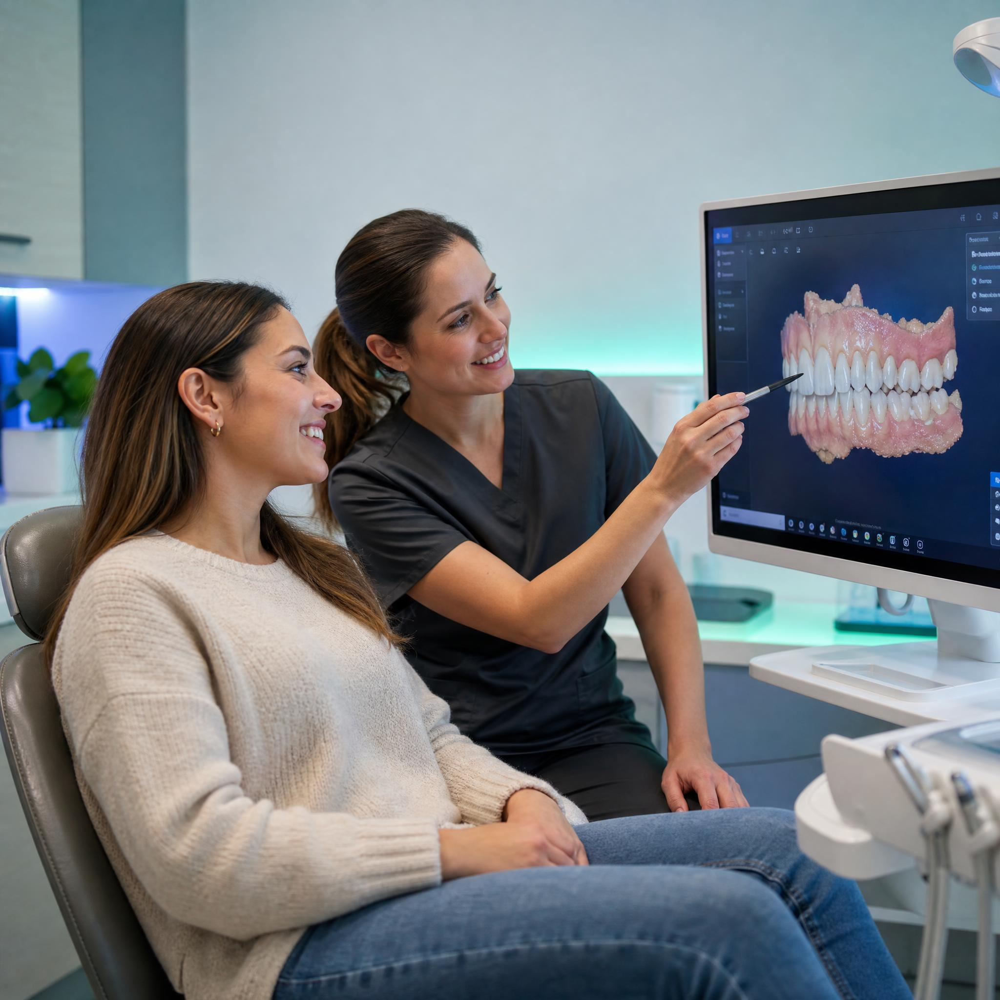
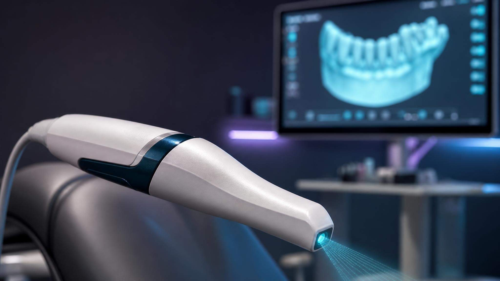
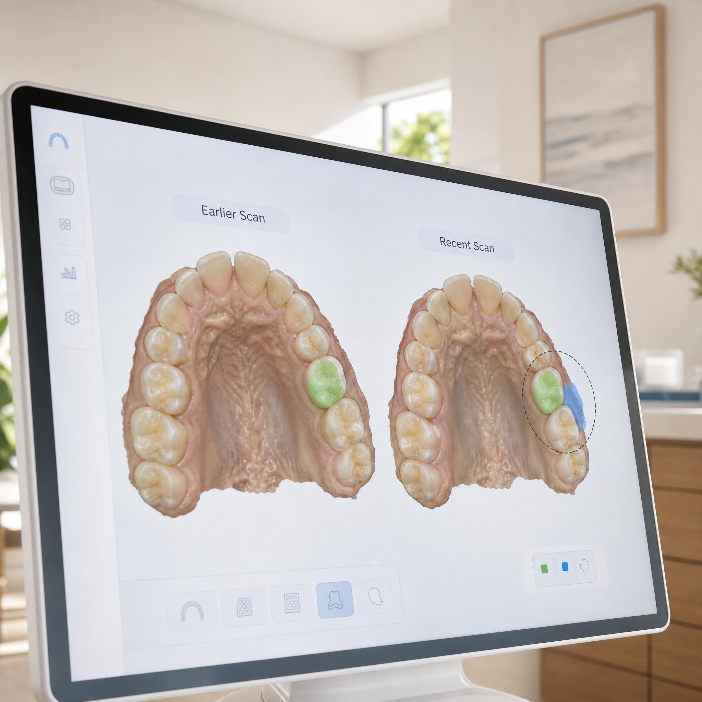

Verás tu boca antes de que decidamos nada
En Lumen sustituimos el "confía en mí" por una pantalla compartida. Escaneo digital, diagnóstico visual y un plan de tratamiento que entiendes entero antes de firmar nada.

El miedo al dentista casi nunca es al dolor. Es a no saber qué te van a hacer.
La mayoría de pacientes que evitan la clínica no tuvieron una mala experiencia con el dolor: la tuvieron con un diagnóstico que nunca vieron, un presupuesto que cambió a mitad de tratamiento, o una explicación que sonó a idioma técnico.
Tres decisiones de diseño clínico, no solo de marketing
Escaneas, y ves lo mismo que ve tu dentista
Nada de moldes de silicona ni radiografías planas. El escáner intraoral proyecta tu boca en 3D en la misma pantalla que estás mirando, en tiempo real.

ESCANEO EN VIVOEl presupuesto se fija antes de tocar una fresa
El plan de tratamiento sale directamente del escaneo: cada fase, cada pieza, cada coste, por escrito, antes de empezar. Si algo cambia en el camino, se habla antes de hacerlo, no después de facturarlo.
El seguimiento no depende de tu memoria
Cada control se compara contra el escaneo anterior en la misma pantalla, así que el progreso (o cualquier alerta temprana) es literal, no una promesa verbal.

ANTES Y DESPUÉSCuatro pasos, una sola visita para el diagnóstico
Captura en 3D
Un escaneo intraoral de 3 minutos reemplaza los moldes tradicionales. Sin arcadas, sin espera de laboratorio.
Diagnóstico compartido
Vemos el modelo juntos, en la misma pantalla. Señalamos exactamente qué pieza, qué zona, por qué.
Ruta y presupuesto cerrado
Sales con un documento con fases, tiempos y coste total. Sin letra pequeña ni fase "a valorar después".
Ejecución guiada por el escaneo
Cada procedimiento usa el mismo modelo digital como referencia, así que el resultado se planea, no se improvisa.
Seguimiento comparado
Cada revisión se superpone al escaneo anterior. El progreso queda documentado, no solo recordado.
Lo que cambia cuando ves tu propio diagnóstico
Lumen es una marca de portafolio: estos testimonios son ilustrativos, escritos para mostrar cómo hablaría un paciente real de esta experiencia, no reseñas verificadas.
Nunca había visto mi propia muela en una pantalla. Cuando me señalaron la grieta, dejé de dudar si necesitaba el tratamiento o no.
Pedí el presupuesto por escrito antes de empezar. No cambió ni un euro en las tres fases del tratamiento.
Le tenía pánico al dentista desde niña. Aquí la primera cita fue solo mirar la pantalla juntos, sin tocar nada. Eso me cambió la relación con venir.
Antes de que preguntes
No. Es una varita que se pasa por la boca sin contacto de presión, sin material que se endurezca dentro de tu boca. La mayoría de pacientes lo prefieren sobre el molde tradicional desde la primera vez.
Sales de la misma cita de diagnóstico con el documento en mano. No hay una segunda visita solo para recibir el presupuesto.
Se compara contra el escaneo original en pantalla, se explica qué cambió y por qué, y se ajusta el presupuesto contigo delante antes de continuar. Nunca después de la factura.
Sí, reservamos huecos diarios para urgencias. Escríbenos desde la página de contacto y te confirmamos el primer hueco disponible.
Tu próxima visita empieza con una pantalla, no con una suposición
Reserva el diagnóstico por escaneo 3D y sal con un plan que puedas leer, entender y decidir con calma.
Primera valoración con escaneo incluido · Sin compromiso de tratamiento